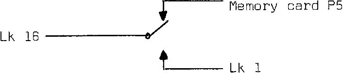

INMC News |
Christmas 1979 · Issue 5 |
| Page 14 of 38 |
|---|
Nothing!!!
After much checking with a cheap multimeter, I discovered that the RESET line was low, ie: active. Tracing it back, it appeared that IC12a was misbehaving. In fact it was a dud. A replacement chip cleared the fault.
From here on everthing went smoothly. The memory board was built and connected to the buss. Everything else worked first time.
| 15 | 13 | 11 | 9 | 7 | 5 | 3 | 1 |
| . | . | . | . | . | . | . | . |
| . | . | . | . | . | . | . | . |
| 16 | 14 | 12 | 10 | 8 | 6 | 4 | 2 |
Now for a quick mod.
For those of you with Nascom 2 who want to run programs from Nascom 1, the Nasbug monitors may be fitted on the extension memory card in location 0 (& 1 for 2K monitors). Connect pin 16 of LSK1 to P5 on the memory card instead of pin 1 on LSK1. To give quick conversion, use a single pole double throw switch as follows:
To switch without ruining anything in memory, execute a ‘HALT’ instruction before changing monitors, and use ‘RESET’ to recover control.
| Page 14 of 38 |
|---|